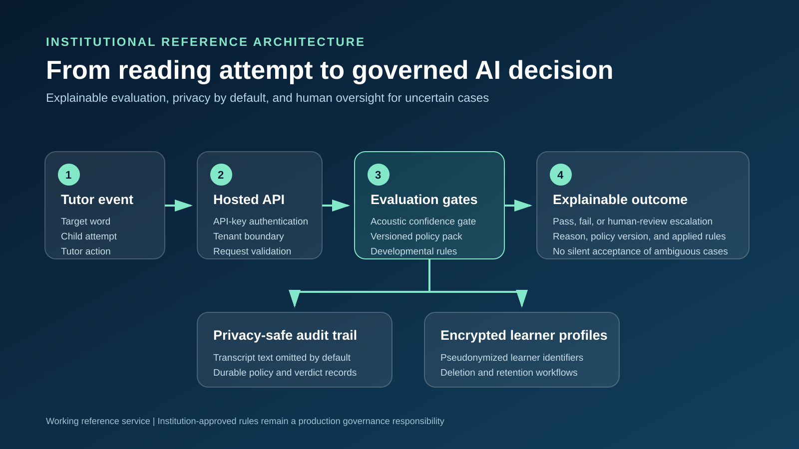
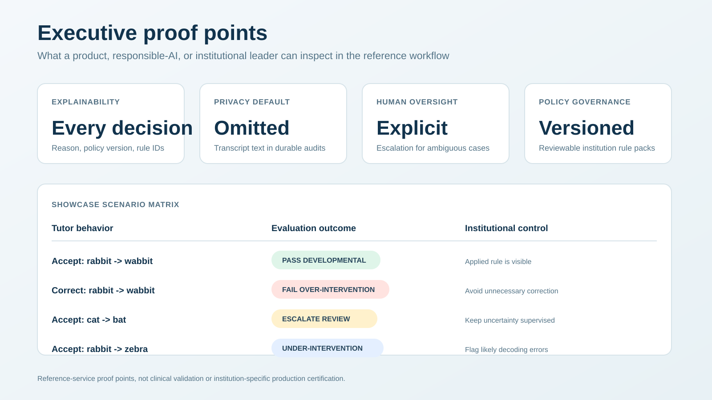
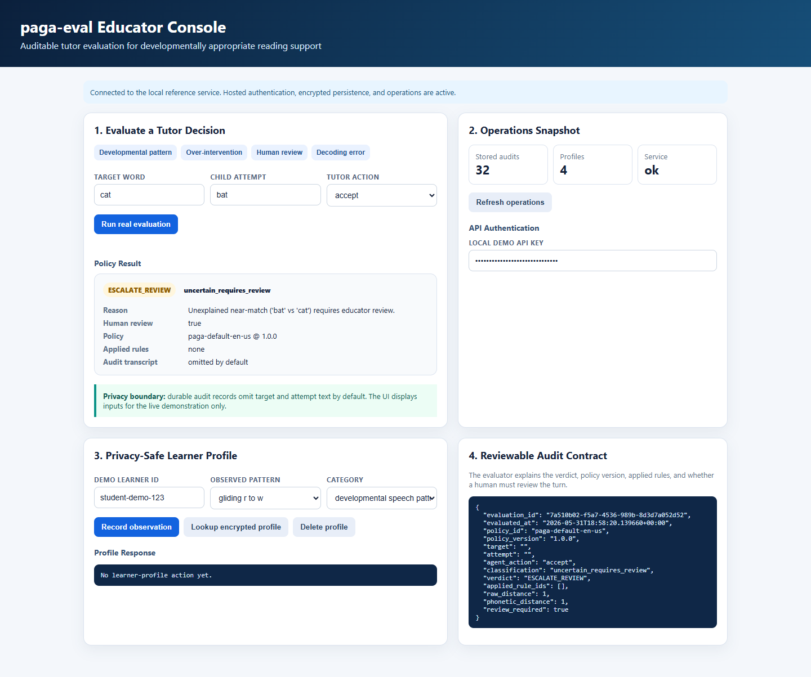
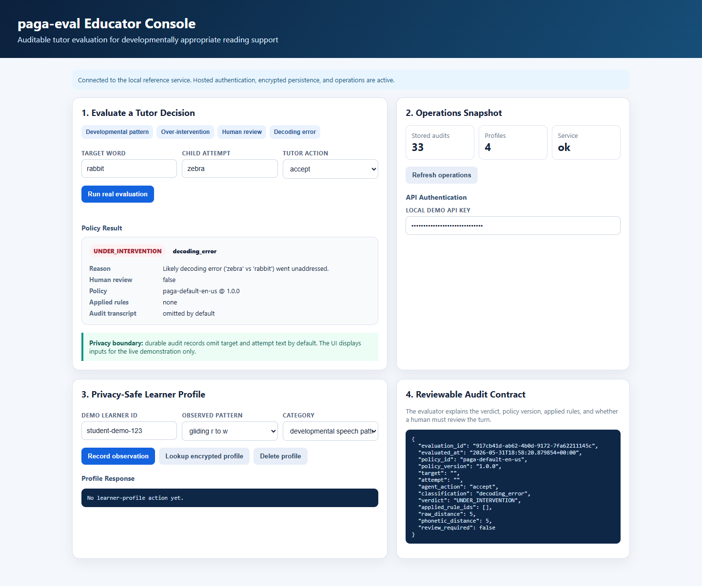

Explainable tutor-agent decisions, privacy-safe audits, and human oversight for uncertain cases.
One reviewable flow for product, engineering, and responsible-AI teams.

What an institution can inspect before integrating a tutor agent.

The evaluator flags unnecessary correction of a developmental speech pattern.
Ambiguous near-matches route to explicit human review.

Transcript text is omitted from durable audits while operations remain observable.

lahari99-cloud.github.io/paga-eval/examples/institution_demo.html